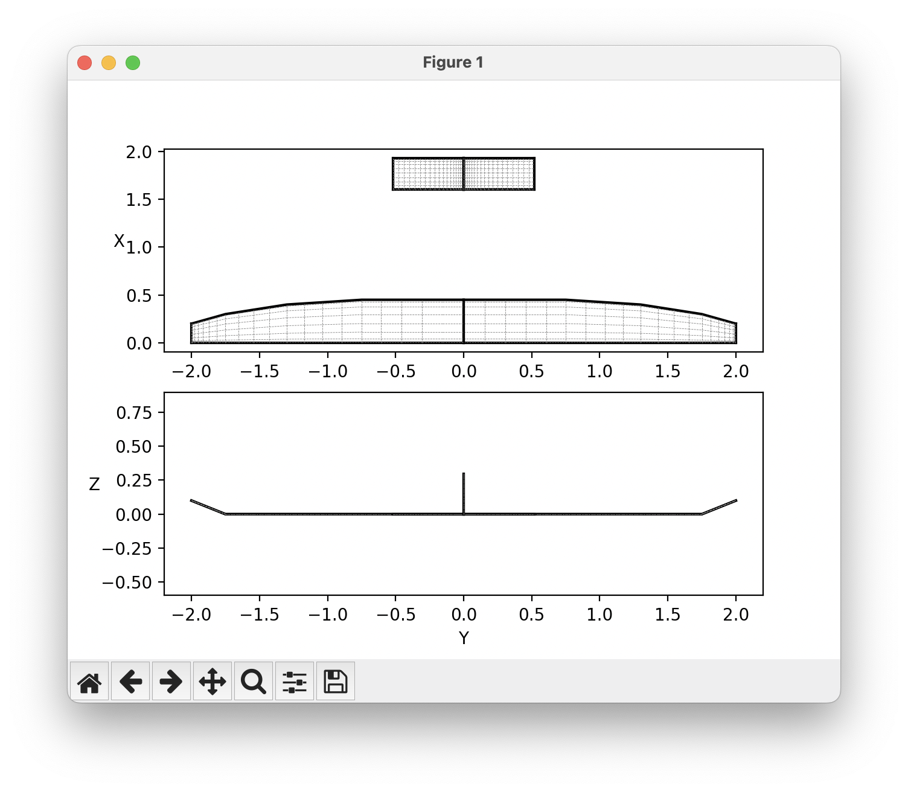
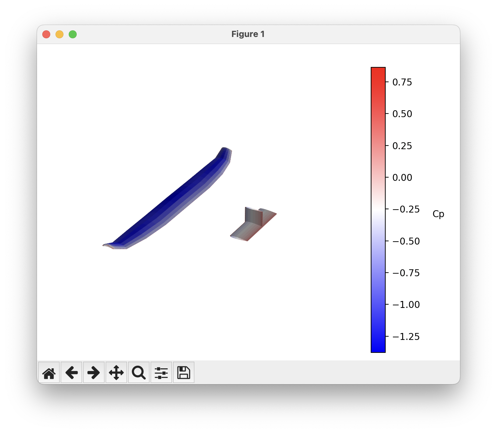
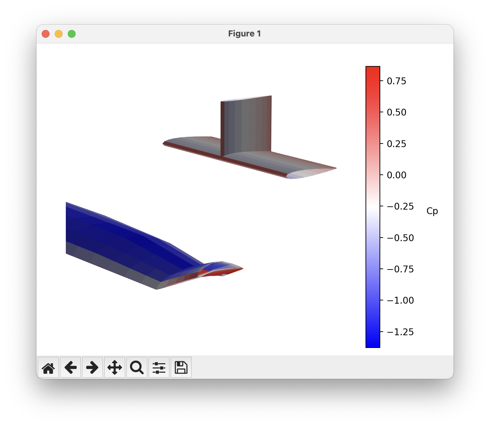

Building a run script¶
Here we will go over the elements of setting up and running a basic analysis in OptVL in more detail. To see a complete example of a run script see the one in the overview page or the examples on GitHub
Initializing and Setting up AVL Solver¶
To begin with OptVL, start by initializing the OVLSolver class:
Like AVL, you can also add a mass file as well.
Constraints¶
After initializing, you can set up various constraints directly.
You can set alpha, beta, roll rate, pitch rate, and yaw rate as well as any control surface in this way.
You can also set a variable in order to meet a specific constraint value.
The valid constraint options are CL, CY, Cl roll moment, Cm pitch moment, Cn yaw moment.
Warning
Be careful to state a constraint variable, con_var, that is affected by the input. For example if you accidentally specify that the pitching moment should be trimmed by the rudder the analysis will not converge.
# set the Elevator to trim Cm to zero
ovl.set_constraint("Elevator", 0.00, con_var="Cm pitch moment")
# set the Rudder to trim Cn to zero
ovl.set_constraint("Rudder", 0.00, con_var="Cn yaw moment")
You can also set parameters of the run case.
The list of parameters you can set are CD0, bank, elevation, heading, Mach, velocity, density, grav.acc., turn rad., load fac., X cg, Y cg, Z cg, mass, Ixx, Iyy, Izz, Ixy, Iyz, Izx, visc CL_a, visc CL_u, visc CM_a, visc CM_u,
Running Analysis¶
Once you've set up the solver, running the analysis is straightforward:
For a more detailed example and advanced use cases, see the analysis guide.
Looking at Data¶
After executing the run, then you can extract various output data from the solver. The methods for extracting data return a dictionary of data.
To get things like CL, CD, CM, etc., use
For stability derivatives such asdCm/dAlpha use
And finally for control surface derivatives like dCm/dElevator use
Running an Optimization¶
See optimization
Visualization¶
The visualizations described in this section rely on the matplotlib package.
Looking at the geometry¶
To quickly look at your geometry you can use the
command, which will produce a figure that looks like this.
Cp plots¶
To get a quick view of the coefficient of pressure on the surfaces of the aircraft you can use
Which will produce a plot like this.
You can rotate, zoom, and pan in the window to look at different parts for the aircraft.